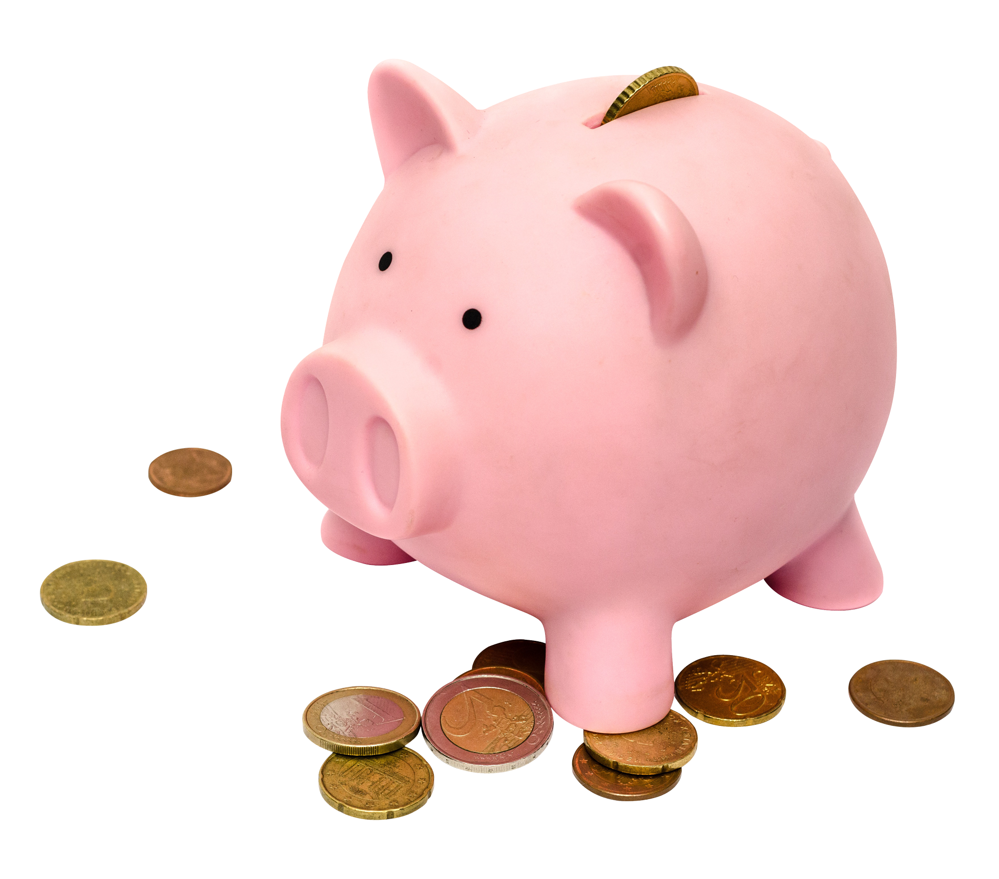

Provavelmente você já se perguntou isso, e aqui está soluções rapidas para o seu problema!

Posicione a geladeira em um local ventilado
Em primeiro lugar, você sabia que a geladeira corresponde a cerca de 30% da energia gasta em uma residência tradicional?
Dessa forma, uma maneira de contribuir para a economia de energia é colocando o aparelho em um local ventilado da sua casa. Então, não deixe esse aparelho em locais muito fechados.
Então, se a sua cozinha não for um local bem arejado, pense em outro cômodo da casa para posicionar esse item.
Evite deixar a porta da geladeira aberta
Em segundo lugar, muitas pessoas têm o costume de deixar a porta da geladeira aberta para pegar os ingredientes do almoço, abastecê-la com novos itens e por aí vai.
No entanto, evite que a porta fique aberta por muito tempo e não coloque alimentos muito quentes em seu interior.
Corte gastos desnecessários
Evite desperdiçar dinheiro em produtos ou serviços que não proporcionam valor significativo ao seu dia a dia.
Evite compras por impulso
Um dos maiores erros financeiros que você pode cometer é gastar dinheiro em coisas ou serviços que você não quer ou não precisa. Antes de decidir comprar algo, é um excelente hábito esperar alguns dias.
Chuveiro é o maior vilão da conta de luz
O chuveiro elétrico é o equipamento que mais consome energia e, consequentemente, também é o que mais pesa na conta de luz do consumidor. Por isso, um uso inteligente durante os banhos pode ser a chave para uma redução significativa dos gastos com energia.